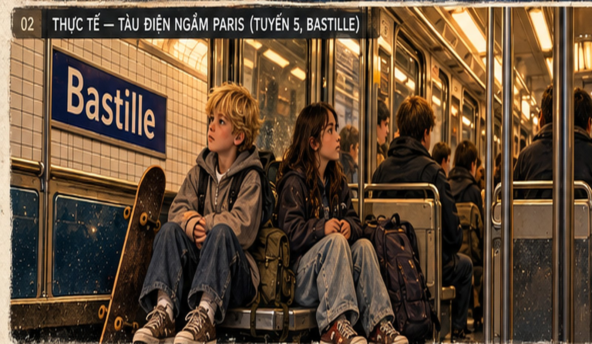

CHAPTER 06 / THE BORROWED REEL
Thế giới
trong mơ
của tôi
Một cuộc điện thoại, một khung cảnh, và cả một thế giới hiện ra trong đầu tôi.
ĐỌC CHƯƠNG →KHÁM PHÁ FILM →THE ORIGINAL / UNCHANGED
Thế giới trong mơ của tôi
Nguyên văn của Jason. Cảnh hai đứa trẻ trên tàu là điều anh quan sát; câu chuyện bữa tối là điều anh tưởng tượng. Con vật ngồi trên mái nhà là một ẩn dụ thị giác, không có trong bản thảo.
AN INTERACTIVE LITERARY ARTIFACT
The Borrowed Reel
Ba lớp cùng một khoảnh khắc: điều đã quan sát, điều đã tưởng tượng, và màu phim còn sót lại.

OBSERVED / a conversation on Métro Line 5
The real moment
Two children, worn sneakers, a skateboard, a call home. The rest is still unknown.
Only details Jason says he saw or partially heard belong to the observed layer.
The slider changes the image treatment, not what actually happened.